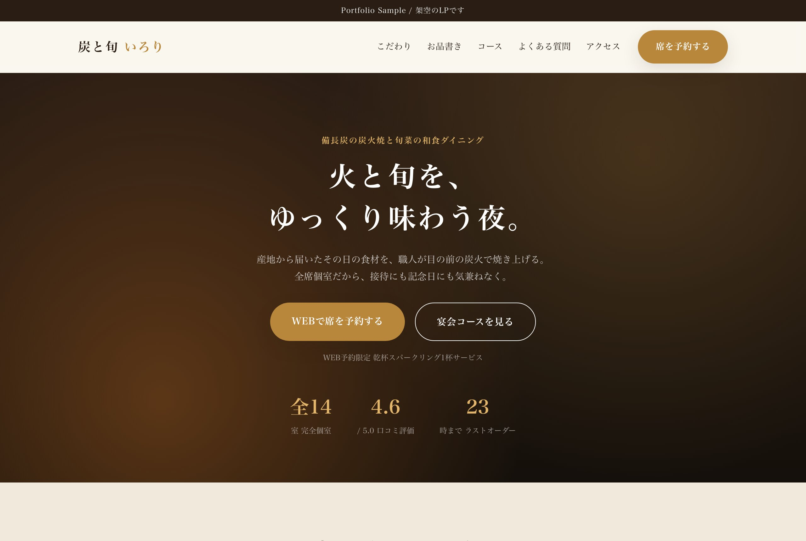
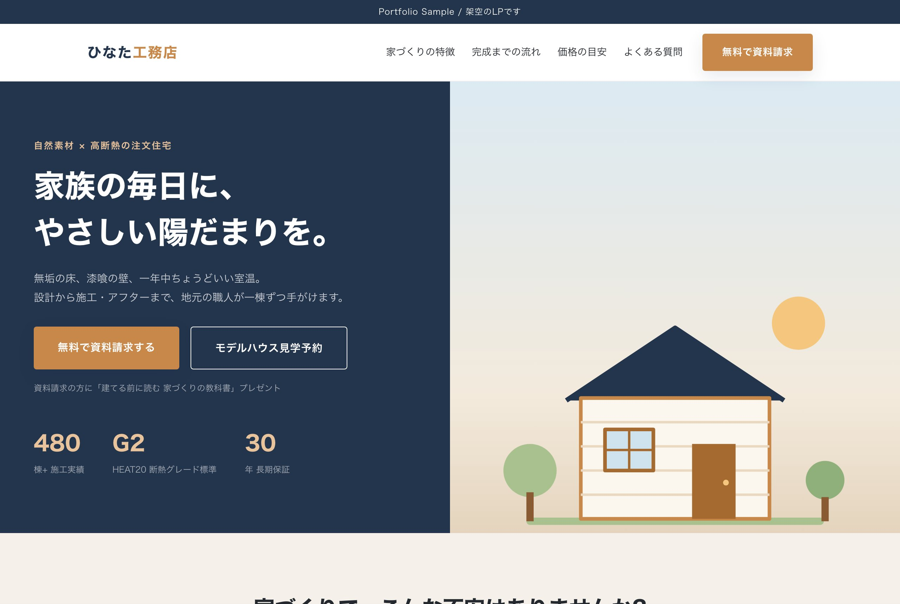

「LPを作りたいけれど、何から決めればいいか分からない」「外注するとき、どこを見て制作者を選べばいいのか分からない」。そんな方に向けた記事です。
結論から言うと、LPづくりで最初に決めるべきなのはデザインではなく、「誰の、どんな不安を、どの順番で解消して、最後に何をしてもらうか」です。ここが決まると、構成も色もボタンの文言も自然に決まっていきます。
この記事では、私がポートフォリオ用に美容・士業・教育・パーソナルジム・飲食・EC・注文住宅の7業種のLPを制作した経験から、実際の進め方と、業種ごとに変えた工夫をまとめました。
LP制作の進め方(5ステップ)
7本とも、だいたい次の順番で作りました。デザインに入るのはSTEP 4からで、前半の3ステップは「何を伝えるか」を決める作業です。
- 業種とターゲットを決める「誰に向けたページか」を年代・状況・悩みまで書き出します。たとえば学習塾なら「子どもの成績に悩む保護者」と「資格を取りたい社会人」では、響く言葉がまったく違います。
- 訴求の「型」を決める感情に訴えるのか、信頼を積み上げるのか、比較して選んでもらうのか。業種によって勝ちパターンが違うので、最初に方針を決めます。
- セクションの並び順を決めるファーストビュー → 悩み → 選ばれる理由 → お客様の声 → 料金 → よくある質問 → 申し込み、という基本の骨格を、業種に合わせて入れ替えたり足したりします。
- 配色とファーストビューを作る開いた瞬間の印象で「自分向けのページだ」と感じてもらえるかが勝負です。色・キャッチコピー・最初に見えるボタンを一緒に決めます。
- スマホで確認し、計測を入れるLPはスマホで見られることが多いため、スマホ表示を基準に崩れやボタンの押しやすさを確認します。公開後に改善できるよう、アクセス解析(GA4)も最初から入れておきます。
STEP 2の「訴求の型」は、最初の3業種を選ぶときに意識的に分けました。
| 訴求の型 | 業種の例 | デザインの方向 |
|---|---|---|
| 感情に訴える | 美容・エステ | 写真や色で世界観を伝え、「なりたい自分」を想像してもらう |
| 信頼を積み上げる | 士業(法律事務所など) | 落ち着いた配色と多めの説明文で、実績と人柄を順に見せる |
| 比較して選んでもらう | 学習塾・スクール | 料金表やコース比較表で、迷っている人の判断を助ける |
同じ「LP」でも型が違えば、文章量も色も大きく変わります。最初にどの型かを決めておくと、途中で方向性がぶれにくくなります。
工夫① 業種ごとに「最初の一歩」の重さを変える
LPのゴールは、ボタンを押してもらうことです。ただ、いきなり「購入」や「契約」を求めると、多くの人はページを閉じてしまいます。そこで、その業種のお客様が気軽に踏み出せる行動をボタンに置くようにしました。
| 業種 | ボタンに置いた行動 | 理由 |
|---|---|---|
| 美容・エステ | 無料カウンセリング予約・電話予約 | 「勧誘されないか」が不安な人が多いため、まず話を聞くだけの行動に |
| 士業 | 無料相談の予約・電話で相談 | 急ぎの悩みが多いので、スマホならタップですぐ電話できるように |
| 学習塾 | 無料体験授業・資料請求 | 入会の前に「続けられそうか」を確かめたい人向け |
| 飲食店 | Webで席を予約・コースを選んで予約 | 記念日や接待の利用を想定し、コースから直接予約できるように |
| EC(定期便) | 初回お試しセットを注文 | 定期購入の前に、手頃な価格で味を試してもらう |
| 注文住宅 | 無料で資料請求 | 検討期間が長い商品なので、まずは資料で比較してもらう |
また、どのLPでも画面の下にボタンを追従させるようにしています。長いページを読んでいる途中で「申し込みたい」と思った人が、ページの一番下まで戻らなくても済むようにするためです。
工夫② 共通の骨格に、業種ならではのセクションを足す
7本のLPは、セクションの基本的な並び(骨格)を共通にしています。毎回ゼロから考えないことで、制作を早くしつつ品質を揃えられます。そのうえで、その業種のお客様が必ず知りたい情報だけを専用のセクションとして足しました。
- 飲食店: お品書き(コースと料理の一覧)。来店前に「何が食べられるか」を確かめたい人が多いため
- EC(定期便): 他の買い方との比較表。「定期便にするとどれだけお得か」が一目で分かるように
- 注文住宅: 完成までの流れ(5ステップ)と資料請求フォーム。初めて家を建てる人は流れ自体が分からないため
- 士業: 費用の目安を表にした料金表。「いくらかかるか分からない」が相談をためらう一番の理由になりやすいため


工夫③ 不安を先回りしてつぶす
LPを読んでいる人は、興味と同時に不安も抱えています。「本当に効果があるの?」「追加料金はかからない?」「自分にも続けられる?」。こうした不安が一つでも残っていると、ボタンは押されません。
そこで、次の3つを意識して配置しました。
- 料金は表で、はっきり見せる: 金額があいまいなページは、それだけで警戒されます。プランが複数ある場合は比較表にし、おすすめのプランを目立たせました。
- よくある質問は「申し込みの直前」に置く: 料金を見て、最後の迷いが出てくるタイミングに疑問へ答えられるよう、ボタンの手前に置いています。
- ファーストビューで不安を一つ消しておく: たとえばパーソナルジムのLPでは、最初の画面に「初回無料・所要60分」と入れ、「どのくらい時間がかかるのか」という迷いを先に消しました。
3つ目の考え方は、同じジムのLPを題材にBefore/Afterの改善事例としてもまとめています。ファーストビューのどこを、なぜ変えたのかを5つのポイントで比較しています。
工夫④ 素材と数字は「誤解されないもの」だけを使う
見落とされがちですが、大事にしているのがこのポイントです。
意味の分からない飾りは使わない
パーソナルジムのLPを作ったとき、最初は「お悩み」や「選ばれる理由」のカードに、丸や四角の図形を仮に置いていました。見た目は整っていても、何を表しているのか分からない飾りは、読む人を迷わせるだけです。最終的には、それぞれの内容に合わせたアイコン(食事プラン表・カレンダー・鍵など)を一つずつ描き起こして差し替えました。
出どころの分からない写真は使わない
ネットで見つけた写真は、使ってよいものか判断できない場合があります。今回の作品では、写真の代わりに自作のイラストや色の組み合わせで表現し、権利面で不安のある素材は使っていません。
根拠のない数字は載せない
改善事例を作ったとき、「成約率が○%上がりました」と書きたくなる場面がありました。しかし実際に計測したデータはありません。そこで成果の数字は載せず、どうやって効果を確かめるか(ボタンのクリック率を計測して比べる、A/Bテストをする)を書くことにしました。実際のお仕事でも、根拠のある数字だけを使うことを大切にしています。
※ このポートフォリオのLPは、すべて架空の企業・サービスを題材にしたサンプルです。LP内の実績数値やお客様の声はダミーであり、その旨を各ページに明記しています。
外注するときに確認したい5つのこと
ここまでの内容を、LP制作を依頼する側の目線でチェックリストにしました。制作者との打ち合わせ前に、答えを用意しておくと話がスムーズです。
- 誰に向けたページかを、年代や悩みまで言えるか
- ページを見た人に最後にしてほしい行動(予約・資料請求・購入など)は何か
- お客様がよく口にする不安や質問を3つ以上挙げられるか
- 載せる数字や実績に根拠があるか(ない場合は載せない判断も必要)
- 公開後に効果を測る仕組み(アクセス解析など)を入れる予定があるか
制作者を選ぶときは、こうした点を一緒に整理してくれるかどうかも判断材料になると思います。
まとめ
LP制作で一番大切なのは、デザインより先に「誰の、どんな不安を、どの順番で解消して、最後に何をしてもらうか」を決めることです。7業種のLPを作ってみて、業種が変わればボタンの文言も、必要なセクションも、色づかいも変わることを実感しました。
一方で、骨格を共通にしておけば、業種ごとの違いに集中して作り込めます。この「共通の型+業種ごとの工夫」という進め方が、7本を作って得た一番の収穫でした。
実際に作ったLPはLP実績の一覧から見られます。スマホでも開いて、ボタンの位置や流れを確かめてみてください。